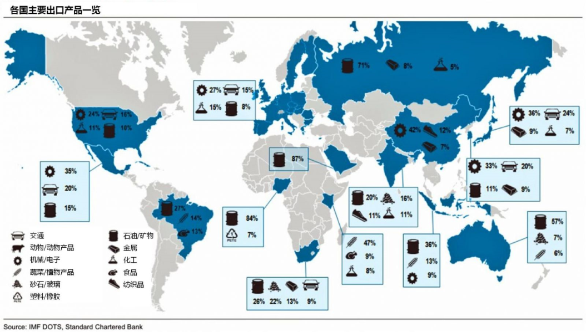

返回主页
各国主要出口产品统计

中美德日货物进出口统计
各国主要进口产品统计
俄罗斯：俄罗斯的出口结构非常单一，石油天然气（71%）出口占据了其出口的大半壁江山。
中国：机械/电子制造业产品（42%）仍然是出口的主力，其次是服装、鞋类为主的纺织品（12%）。
日本：机械/电子（36%）和汽车等交通产品（24%）是出口主力。
美国：出口结构平衡，排名前四的分别为机械电子（24%）、交通（16%）、化工（11%）和石油矿物（10%）。
欧盟：出口结构和美国类似，排名前四同样为机械电子（27%）、交通（15%）、化工（15%）和石油矿物（8%）。
澳大利亚、阿拉伯、尼日利亚：和俄罗斯一样，这些国家的出口能源和矿物出口，石油/矿物占出口的比重均超过50%。
version:1.0; jobnet@188.com © retter2012.com